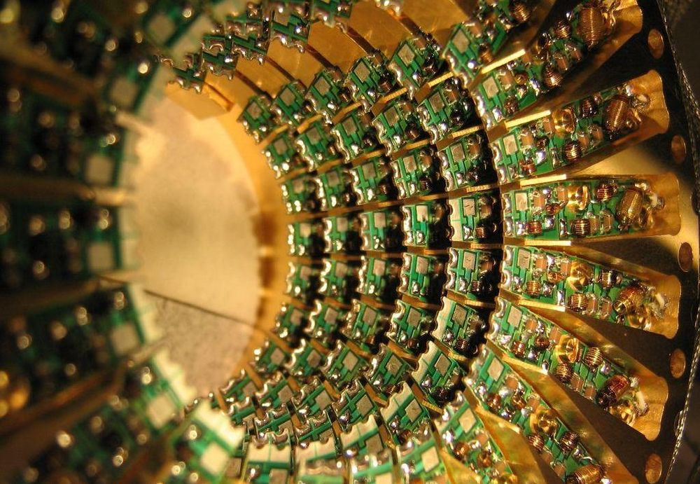

Research
Quantum A.I. (8 papers)
For certain computations such as optimization, sampling, search or quantum simulation this promises dramatic speedups. Google are particularly interested in applying quantum computing to artificial intelligence and machine learning. This is because many tasks in these areas rely on solving hard optimization problems or performing efficient sampling.

1. Bounding the Costs of Quantum Simulation of Many-Body Physics in Real Space (2017)
Google present a quantum algorithm for simulating the dynamics of a first-quantized Hamiltonian in real space based on the truncated Taylor series algorithm. They find that their algorithm can simulate η interacting particles using a number of calculations of the pairwise interactions that scales, for a fixed spatial grid spacing, as O(η^2), versus the O(η^5) time required by previous methods (assuming the number of orbitals is proportional to η), and scales super-polynomially better with the error tolerance than algorithms based on the Lie-Trotter-Suzuki product formula.
2. Chiral Ground-State Currents of Interacting Photons in a Synthetic Magnetic Field (2017)
The intriguing many-body phases of quantum matter arise from the interplay of particle interactions, spatial symmetries, and external fields. Generating these phases in an engineered system could provide deeper insight into their nature. Using superconducting qubits, Google simultaneously realize synthetic magnetic fields and strong particle interactions, which are among the essential elements for studying quantum magnetism and fractional quantum Hall phenomena. Their work introduces an experimental platform for engineering quantum phases of strongly interacting photons.
3. Computational multiqubit tunnelling in programmable quantum annealers (2016)
Quantum tunnelling is a phenomenon in which a quantum state traverses energy barriers higher than the energy of the state itself. Quantum tunnelling has been hypothesized as an advantageous physical resource for optimization in quantim.Furthermore, they experimentally demonstrate that quantum tunnelling outperforms thermal hopping along classical paths for problems with up to 200 qubits containing the computational primitive.
4. Digitized adiabatic quantum computing with a superconducting circuit (2016)
A major challenge in quantum computing is to solve general problems with limited physical hardware. Google implement digitized adiabatic quantum computing, combining the generality of the adiabatic algorithm with the universality of the digital approach, using a superconducting circuit with nine qubits. They find that the system can approximate the solutions to both frustrated Ising problems and problems with more complex interactions, with a performance that is comparable. The presented approach is compatible with small-scale systems as well as future error-corrected quantum computers.
5. Scalable in-situ qubit calibration during repetitive error detection (2016)
Google present a method to optimize physical qubit parameters while error detection is running. Their method is O(1) scalable to systems of arbitrary size, providing a path towards controlling the large numbers of qubits needed for a fault-tolerant quantum computer.
6. What is the Computational Value of Finite Range Tunneling? (2016)
Quantum annealing (QA) has been proposed as a quantum enhanced optimization heuristic exploiting tunneling. Google demonstrate how finite-range tunneling can provide considerable computational advantage.
7. Fast quantum methods for optimization (2015)
Discrete combinatorial optimization consists in finding the optimal configuration that minimizes a given discrete objective function. An interpretation of such a function as the energy of a classical system allows us to reduce the optimization problem into the preparation of a low-temperature thermal state of the system. Motivated by the quantum annealing method, Google presents three strategies to prepare the low-temperature state that exploit quantum mechanics in remarkable ways.
8. Entanglement in a Quantum Annealing Processor (2014)
Entanglement lies at the core of quantum algorithms designed to solve problems that are intractable by classical approaches. One such algorithm, quantum annealing (QA), provides a promising path to a practical quantum processor. Goofle has built a series of architecturally scalable QA processors consisting of networks of manufactured interacting spins (qubits).